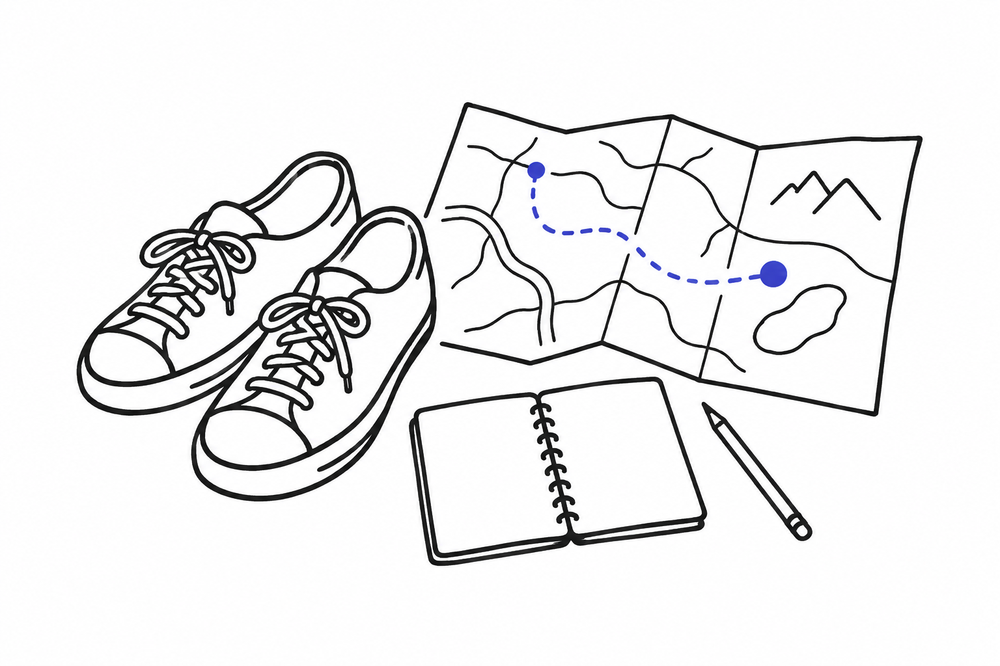
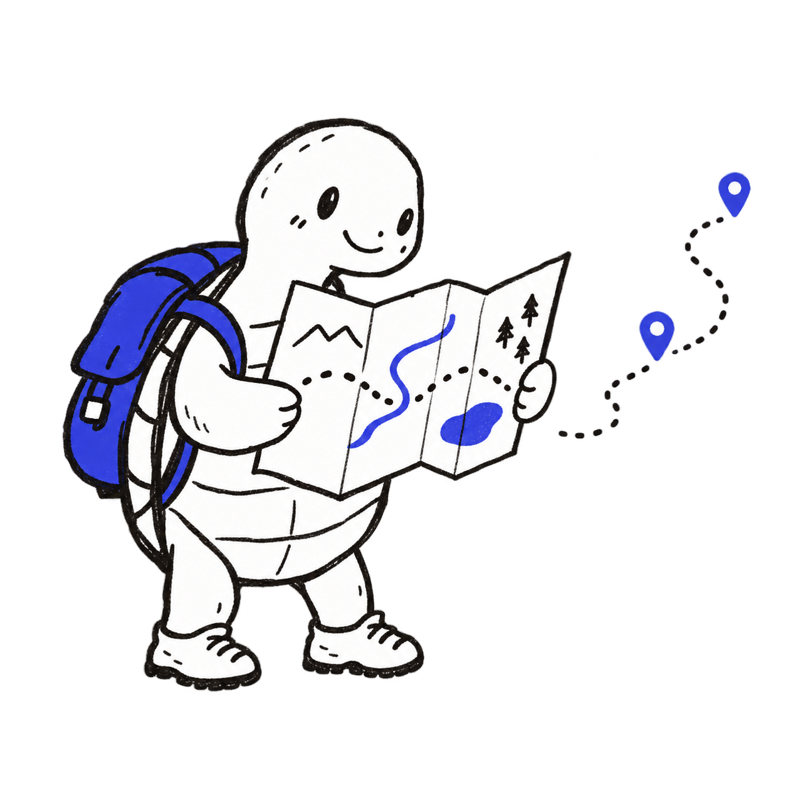

YOUR NEXT CHAPTER STARTS HERE.日本留学生活手帖 / VOL. 01
すこし遠くへ、自分らしく。
去日本，
找到自己的
生活节奏。
一所学校，一座城市，一种新的日常。
从好奇出发，让每一个选择更接近你。
A little further,
a little closer to you.留学の
はじめかた
a little closer to you.留学の
はじめかた
FIELD NOTES
51 条合作记录 · 13 座城市 · 从城市、街区与校园，慢慢认识你的日本。
HELLO, NEW EVERYDAY. ↗01 / PLACES TO BEGIN
先喜欢一座城。

把课本翻开之前，
也看看教室之外的风景。
02 / LIFE BEYOND THE CLASSROOM学会一门语言，
学会一门语言，
也认识另一面的自己。
放学后的咖啡，第一次独自坐电车，
和新朋友慢慢聊完的一段话。
我们想帮你找到的，是适合学习，也适合生活的地方。
03 / PUT YOUR PLANS ON THE MAP
从「想去」，到「这里」。
把学校、街区和日常，放在同一张地图上看看。

02 / SCHOOL NOTEBOOK
找到你的学校。
从自己的偏好出发，慢慢缩小选择。
合作学校 · 点击地图点位查看
正在打开地图…